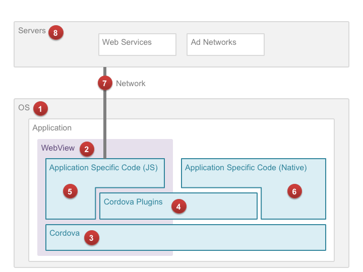

1. はじめに
近年、モバイルアプリケーション（以下、アプリ）の市場では、プラットフォーム固有のプログラム言語（以下、ネイティブ言語）で全体を書く代わりに中核部を HTML5 や JavaScript で作った、ハイブリッドアプリケーション（以下、ハイブリッドアプリ）と呼ばれるアプリが増えている。AppBrain による 2015年6月24日時点の調査によると、Google Play で公開されているアプリのうち、5.63% がハイブリッドアプリフレームワーク（以下、フレームワーク）の1つである Cordova を使って開発されている。[1]
ハイブリッドアプリの開発には標準化された Web の技術を用いるため、アプリのクロスプラットフォーム化を容易にできる一方、開発の効率化のために採用したフレームワークがもたらす潜在的な脆弱性や、Web の開発言語に起因する脆弱性がアプリに混入するリスクが生じる。
したがって、アプリユーザが抱えるセキュリティ上のリスクをできるだけ低減するために、アプリ開発者には、セキュアコーディング等により自身が書くコードを堅牢にするのみならず、フレームワーク等がもたらす脆弱性を把握し、取りうる対策を最大限に実施することが望まれる。フレームワークに関する脆弱性の研究はすでにいくつか行われているが [2] [3] [4]、これらの研究はアプリ開発者が取りうる対策を網羅的にまとめたものではなく、アプリに作り込まれうる脆弱性の全体像を俯瞰するには適さない。
本報告書では、フレームワークの1つである Apache Cordova (以下、Cordova) を用いて開発された、Android と iOS のハイブリッドアプリに様々な脆弱性が作り込まれる様子を、アプリの構成要素（OS、WebView、Cordova、プラグイン、アプリ固有のコード、ネットワーク通信、サーバ）ごとに分析する。分析にあたり、各コンポーネントにこれまで発見された脆弱性、先行研究で指摘された脆弱性、本調査により発見した新規の脆弱性を可能な限り網羅し、その影響と対策方法を提示した。また、これらの脆弱性の影響範囲を把握するため、アプリマーケットで公開されているハイブリッドアプリの調査を行った。
本調査は、経済産業省委託事業「平成26年度サイバーセキュリティ経済基盤構築事業（サイバー攻撃等国際連携対応調整事業）」における「脆弱性関連情報等の流通及び製品開発者における対策活動の支援」の一部として行われたものである。
2. ハイブリッドアプリケーション
2.1. ハイブリッドアプリケーションの特徴
ハイブリッドアプリとは、ネイティブアプリとWebアプリの長所を組み合わせて作られたアプリである。 ユーザインタフェースや端末に依存しないビジネスロジックは、HTML、JavaScript、CSS を用いて Webアプリとして開発され、アプリ内の WebView 上で動作する。WebView は一般的なウェブブラウザと同等の機能しか備えていないため、端末固有の機能やローカルファイルに対する操作を十分に行うことはできない。端末固有の機能を利用する部分は別途、ネイティブ言語を使ってネイティブアプリとして開発され、「ブリッジ」と呼ばれる仕組みを介して、Webアプリの機能とネイティブアプリの機能が連携するようになっている。つまりハイブリッドアプリでは、Web アプリからネイティブアプリの機能を呼び出すことで、Web アプリの機能不足を補えるようになっている。
2.2. Apache Cordova
2.2.1. 概要
フレームワークの中で現在最も人気があるのは本稿でも取り上げる Apache Cordova （以下 Cordova）である。Cordova は現在、Apache Foundationによって Apache License 2.0の下、オープンソースとして公開されている。[5] 商用利用が可能であり、改変や再頒布も自由に行うことができるため、Cordova をベースに開発された多くの派生版フレームワークが存在する。
Cordova を用いたアプリ開発では、通常、1つ以上の Cordovaプラグインを利用する。Cordovaプラグインとは、端末固有の機能を API として Web アプリに提供するものである。カメラ、バーコードリーダー、センサー制御、ローカルファイルの操作といった様々な機能を提供するプラグインが存在し、開発者は、必要な機能を備える Cordova プラグインを導入することで、Webの言語だけでアプリを開発することができる。また、必要な機能を持つプラグインが存在しなければ、開発者自身がプラグインを作成することも可能である。
2.2.2. 沿革
-
2008年、カナダの Nitobi Software Inc.が、PhoneGap と呼ばれるフレームワークを開発[6]
-
当初はiOSのみをサポート。Web開発者が手軽にiPhoneアプリを開発できるフレームワークとして誕生
-
オープンソース化 (MIT License) [7]
-
-
2009年、クロスプラットフォームのフレームワークとして成長
-
Android、Blackberry、Symbian、Windows、webOS、bada などをサポート[8]
-
-
2011年10月、Nitobi社 が Adobe Systems Inc. に買収される [9]
-
2011年、Apache Callback が Apache Cordova に改名される [12]
2.2.3. Cordova の派生製品
Cordova をベースに開発されたフレームワークやソリューションとしては次のものが存在する。
2.2.4. Cordova プラグイン
主要な Cordova プラグインは、Apache Software Foundation (ASF) が運営する Web サイト Plugins Registry で公開されており、アプリ開発者は必要なプラグインを検索することができる。2015年6月25日現在、1053個のプラグインが登録されている。プラグインの管理は npm に移行され、これに伴い2015年10月15日に Plugin Repository が閉鎖されることがアナウンスされている。 [13] プラグインポータルサイトとしては、サードパーティーの Plugreg が注目を集めている。2015年6月25日現在、Plugin Registory には 1469 を超える数のプラグインが公開されている。
プラグインによっては、サポートする OS が異なる場合や、提供される機能が OS ごとに異なる場合がある。たとえば File プラグインは、Windows では一部の機能を実装していない。
2.2.5. JavaScript とネイティブ間のブリッジ
Cordova のブリッジの実装は OS ごとに異なる。また、OS のバージョンや使用用途に応じて、複数のブリッジを使い分けている。以下に Android と iOS におけるブリッジの実装方法を説明する。
Android
Cordova 4.0.2 は、次の2系統のブリッジをサポートしている。
Web アプリからネイティブアプリへの通信に使用される。次の2種類がある。
addJavascriptInterface() のセキュリティ上の懸念から、Android 4.2 未満の端末では PROMPT のみが使われる。[18] Android 4.2 以降の端末では、初回の通信のみ PROMPT を使用し、その後の通信には JS_OBJECT が用いられる。PROMPT では、window.prompt() を呼び出したドキュメントのオリジンがネイティブ側のコードに通知されるので、ホワイトリストを用いた実行制限が可能である。一方で、PROMPT は UI スレッド上で動作することから、JS_OBJECT に比べてパフォーマンス上劣るという欠点がある。
ネイティブアプリから Web アプリへの通信に使用されるもので、次の4種類が存在する。[19]
-
JsToNative ブリッジを用いて、ネイティブから送信するデータの有無をポーリングで確認する方法 (POLLING) [20] [21]
-
WebView.loadUrl("javascript:") を用いてネイティブ側から JavaScript を注入する方法 [22]
-
ネットワークの ON/OFF をトグルし、送信するデータの発生を window.ononline() で JavaScript に通知する方法 (ONLINE_EVENT) [23]
-
WebView の sendMessage() という Private API をリフレクションで実行し、ネイティブ側からメッセージを送信する方法 (PRIVATE_API)[24]
iOS
iOSにおいても、Androidと同様、2系統のブリッジがサポートされている。2015年6月25日時点の最新バージョンは 3.8.0 であるが、以下の調査結果は Cordova-iOS 3.7.0 に基づく。近い将来にリリースされる予定である 4.0.0 では、iOS8 で搭載された WKWebView のサポートや、新仕様のホワイトリストが導入される予定であり、仕様が大きく変わることが予想される。
Cordova-iOS 3.7.0 は、次のブリッジをサポートしている。
次の2種類のブリッジをサポートしている。[27]
-
iframe を生成し、フレーム内でのページ読み込みをネイティブのwebView:shouldStartLoadWithRequest:navigationType: でフックする方法
-
XmlHttpRequest を呼び出し、リクエストの発生をネイティブの NSURLProtocol 派生クラスの canInitWithRequest でフックする方法
1と2のいずれも、Webアプリ上でのリソース取得要求をネイティブのコードでフックすることにより実現されている。
iframe によるブリッジでは、gap:// で始まる URL へのアクセスが、ネイティブの機能呼び出しとして解釈されるのに対し、XMLHttpRequest によるブリッジでは、/!gap_exec というパスに対するアクセスが、ネイティブの機能呼び出しとして解釈される。
過去のバージョンの Cordova では、XMLHttpRequest がデフォルトで使用されていたが、現在は iframe がデフォルトになっている。[28] 変更は、過去の iOS のバグに起因するものであるが、iframe は性能面でも XMLHttpRequest と比べて有利であると考えられる。[29]
次の1種類のブリッジをサポートしている。
-
UIWebView の stringByEvaluatingJavaScriptFromString: を通じて、ネイティブから JavaScript を注入する方法
iOS8 で追加された WKWebView について補足する。JavaScript からネイティブへのブリッジとして、WKWebView に追加された Script Messages の追加実装は2015年6月の時点で完了しており、今後正式にリリースされる見込みである。この機能は、JavaScript から window.webkit.messageHandlers.cordova.postMessage(command) という方法でコマンドを送信する。
2.2.6. ホワイトリスト
Cordova では、WebView 上にロードされたページからブリッジに対するアクセスが常に許可されている。したがって、信頼できないページを開いた場合、ブリッジを悪用され、アプリの権限で任意の処理が行われる危険がある。 そのようなリスクを低減する機能として、Cordova は「ホワイトリスト」と呼ばれる保護機能を備えており、アプリ開発者が信頼するオリジン以外からのリソース取得を制限することができる。
Android 版 Cordova 4.x では、ホワイトリストが Cordova 本体から分離し、プラグインとして別配布される仕様に変更されている。[30] [31] アプリにホワイトリストのプラグインを組み込まない場合、ブリッジへのアクセスは一切保護されない。また、Cordova CLI で Android アプリのプロジェクトを構築した場合 (cordova platform add android を実行した場合)、Whitelist プラグインが自動的に組み込まれる。
2015年6月25日時点では、Cordova 4.x の新仕様に基づく Whitelist プラグイン「cordova-plugin-whitelist」と 3.x との互換性維持を目的とした「cordova-plugin-legacy-whitelist」の2種類の Whitelist プラグインが提供されているが、後者は安全性に劣るため、利用は推奨されない。
Android 版 Cordova 3.x とiOS 版のホワイトリストは、config.xmlの「<access origin="[origin]" />」句によって宣言する。リストの初期値は「*」、つまり全てのドメインを許可する状態であるため、適切に設定する必要がある。Android 版 Cordova 4.x の cordova-plugin-legacy-whitelist も同様に動作する。
Android 版 Cordova 4.x ではホワイトリストの仕様が変更され、従来のホワイトリストが次の3種類に分割された。[32]
-
window.top のページ遷移を制御。このホワイトリストに指定されたオリジンの場合のみ、ブリッジへのアクセスが許可される。デフォルト値は file://*
-
従来の External Application Whitelist に相当。デフォルトでは、http://*/*、https://*/*、 sms:*、mailto:*、geo:*、market:* が許可される
-
<access origin> を再利用し、XHR や iframe といったサブリソースの参照先を制限する。デフォルトの定義値は「*」で、任意のオリジンからサブリソースを取得することができる。
-
iframe 内で開くことのできるページのオリジンは本ホワイトリストまたは Navigation Whitelist のいずれかで登録できる
-
Navigation Whitelist で指定した場合に限り、iframe 内の HTML コンテンツからブリッジに対してアクセスができる。つまり、JavaScript からブリッジにはアクセスはできるが、有効な bridge secret の値が発行されていないため、各種プラグインへはアクセスできない
Android 4.x では、Whitelist プラグインを組み込んだ場合、HTML 文書に Content Security Policy (CSP) を指定することが要求される。Android OS 側の制限により、新仕様である Network Request Whitelist を使っても十分なアクセス制御を行うことができないため、CSP の利用が推奨されている。Whitelist プラグインを組み込むと、HTML 文書の中に meta タグで CSP が指定されていない場合、10秒おきにコンソールへ警告ログが出力され、CSP を適用するよう促される。[33]
ホワイトリストは過去に複数の実装上の脆弱性が指摘されており、その一部は現在も解決されていない。たとえば、Android API 10 以下ではホワイトリストが機能しない。[34]また、ホワイトリストには、運用面での課題も指摘されている。ホワイトリストの制限事項および課題については、以降の章で詳細に検討する。
2.3. 脆弱性の混入箇所
Cordovaを用いて作成された一般的なAndroid/iOSアプリと動作環境を図示すると次のようになる。
-
OS
-
WebView
-
Cordova
-
Cordova Plugins
-
アプリ固有コード(JavaScript)
-
アプリ固有コード(ネイティブ)
-
ネットワーク
-
サーバ
以降の章では、1 から 8 の各要素に内在しうる脆弱性と、その対策方法について検討する。特に 2. 3. 4. 5. については、Cordova を用いたアプリに特有なので、より詳細に検討する。
3. OS
3.1. 脆弱性の傾向
Android や iOSにはこれまでに多くの脆弱性が発見されており、これらはOS上で動作するアプリにも間接的に影響を及ぼす可能性がある。
OSの脆弱性は、端末メーカーから配信されるファームウェアアップデートによって修正されるが、サポート期間を過ぎた端末の脆弱性は放置されるため、そのような端末のユーザが危険に晒されることになる。
アプリに影響を及ぼす可能性のある脆弱性としては、たとえば次に挙げるものが存在する。
Android バージョン4.1 からバージョン4.3 においては、Java の乱数生成関数(SecureRandom) が返す乱数値を予測できる脆弱性が指摘されている。
We have now determined that applications which use the Java Cryptography Architecture (JCA) for key generation, signing, or random number generation may not receive cryptographically strong values on Android devices due to improper initialization of the underlying PRNG.
http://android-developers.blogspot.jp/2013/08/some-securerandom-thoughts.html
脆弱性は実際に Bitcoin の不正送金に利用され、Google から Android アプリの開発者に対して、ワークアラウンドを実装するよう注意喚起が行われた。
Android は libpng、libxml2、libexif、zlib などのオープンソースライブラリを多数利用しており、アプリが利用する OS の機能によっては、これらオープンソースライブラリの脆弱性の影響を受ける。
たとえば、2015年2月現在の最新の Android には libpng 1.6.10 が使用されているが、1.6.16 未満のバージョンの libpng にはヒープオーバーフローの脆弱性が指摘されている。 [35]
他にも、ネットワーク通信や暗号処理を提供する API のバックエンドには OpenSSL が利用されているため、これらの API を利用するアプリは OpenSSL の脆弱性の影響を受ける可能性がある。[36]
iOSでは、2014年、NSXMLParser において、XML に含まれる外部エンティティの参照を無効化できないという脆弱性 (CVE-2014-4374) が見つかっている。iOS8 では NSXMLParser で外部エンティティ参照の可否を設定するプロパティは機能しておらず脆弱性が再現する状態であったが、iOS8.3 において CVE-2015-1092 として 再度修正されている。
libxml2 では外部エンティティ参照はデフォルトでは許可されていないため、iOS8.3 で修正されるまでの間、本脆弱性に対応するには、アプリ開発者は NSXMLParser ではなく libxml2 を利用する必要があった。
3.2. 対策
Android では、OSのシステムライブラリを使用せずに第三者の提供するライブラリをアプリ自体に組み込むことができる場合もある。ライブラリの管理をアプリ開発者自身が行うことにより、脆弱なライブラリを含む端末を使用するユーザの被害を軽減できる場合がある。 Crosswalk はその1例である。
ビジネス上許容できるのであれば、脆弱性の存在する古いOSバージョンのサポートを打ち切るという選択肢もある。既に攻撃方法が開示されていたり悪用されている脆弱性であれば、アプリ利用者が攻撃を受ける危険性に配慮し、サポートを打ち切ると同時にユーザに対して注意喚起を行うことも望ましい。
アプリが利用しているライブラリやOSの機能を把握し、OSのベンダーやセキュリティ関連機関が発信する脆弱性情報を継続的にモニタリングする。また、脆弱性が報告されているOSの機能を使わないよう開発ルールを定めるなど、脆弱性情報を開発にフィードバックする仕組み作りも重要となる。
4. WebView
4.1. 概要
ハイブリッドアプリでは、主要機能の多くが Web アプリとして実装され、WebView 上で実行される。WebView への依存度が高いため、通常のアプリと比べ、WebView の脆弱性が悪用された場合の影響が大きい。
2015年1月、セキュリティ調査会社の Rapid7 の報告により、Google が Android 4.3 以下の WebView に対するセキュリティパッチの開発を止めたことが明らかになった。Android 4.3 以下の WebView には複数の脆弱性が存在し、調査によると9億3千台のAndroid端末がそれらの脆弱性の影響を受けるとしている。その後、Googleの開発者である Adrian Ludwig 氏が Google+ において、Android 4.3 以下の WebView に対してパッチの開発を行わないことを認めている。
Android 4.3 以前の端末を所有するユーザは、通信キャリアや端末メーカが Android 4.4 以降へのアップデートを提供しない場合、WebView の脆弱性を対策することができず、脆弱性の影響を受ける状態が続くことになる。
Android 5.0 以降の WebView は、システムから切り離され、通常のアプリと同様に GooglePlay からアップデートできるモジュールとして提供されるようになった。ファームウェアのアップデートを待つことなく、WebView をアップデートできるよう変更された点は、ユーザにとって脆弱性対策の観点から好ましい。ただし、アップデートは通常のアプリと同様に配信され、端末のデフォルト設定では Wi-Fi 接続時のみに自動更新されることになるため、3G/LTE のみを使用するユーザは、手動で Google Play からアップデートをダウンロードする必要がある。
以降、アプリに影響を与える WebView の脆弱性について検討する。
4.2. WebView の主な脆弱性
4.2.1. Webページから任意のJavaコードを実行できる脆弱性 (CVE-2013-4710, CVE-2014-1939)
Android 4.1 以下の WebView には、ユーザを悪意サイトにアクセスしただけで攻撃者の Java コードを実行させられる脆弱性が存在する。[37] [38] 脆弱性が悪用された場合、ユーザが Web ページを開いただけで、アプリが管理するユーザの個人情報が盗まれる、あるいは他のアプリが起動されるなどの恐れがある。また、他の脆弱性との組み合わせで、Web ページを開いただけで端末の管理者権限が取られ、マルウェアをインストールされたりする恐れもある。
Android フレームワークが WebView を初期化する際には、2つの Java オブジェクト SearchboxImpl と accessibility を WebView#addJavascriptInterface によってインスタンシエートしており、それぞれ searchBoxJavaBridge_ と accessibility という名称で JavaScript から参照可能であった。また、JavaScript から Java のリフレクションを行うことで、これらのオブジェクトを介して任意の Java コードを実行することが可能であった。
Android 4.2 では、SearchboxImpl オブジェクトは WebView から削除され、accessibility オブジェクトについては、リフレクションが使えないように制限されている。[39] [40]
これらの脆弱性は Android 4.1 以前の addJavascriptInterface の仕様に起因するものである。したがって、アプリが API 16 以前をサポートする場合、アプリ内のコードで addJavascriptInterface を利用した際にも同様の脆弱性が生じる可能性がある。Android 4.2 では、Java のソースコード上で @javascriptinterface というアノテーションが指定されたメソッドしか JavaScript から操作できないように API が仕様変更されている。[41]
Cordova は addJavascriptInterface を用いたブリッジをサポートしているが、Android 4.2 未満の端末ではこれを使用していない。 [42]
4.2.2. 同一生成元ポリシーを回避し任意の JavaScript を実行できる脆弱性 (CVE-2014-6041)
2014年8月、研究者のRafay Baloch氏によって、Android 4.3以下の端末における、同一生成元ポリシーを回避する脆弱性 CVE-2014-6041 が報告された。攻撃コードはRafay氏の ブログ で公開され、また攻撃方法そのものも容易であることから、いつ悪用されてもおかしくない状態にある。攻撃方法は、攻撃対象のページを開いた iframe や window オブジェクトの上で、ナル文字で始まる javascript スキームのURL(\u0000javascript:) を開かせるというものである。
4.2.3. iOS の UIWebView の脆弱性
iOS の UIWebView にも WebKit 由来の脆弱性が多数報告されており、iOS8 未満では一部の脆弱性が改修されていない。たとえば、iOS 8.1.1 より前の WebKit にはリモートから任意コード実行可能な脆弱性 CVE-2014-4452、 CVE-2014-4462 が報告されている。これらは2014年11月の iOS 8.1.1 で修正されているが、iOS7 系の最後のアップデートは2014年6月であるため、iOS7 系では修正されていない可能性が高い。
4.3. 対策方法
4.3.1. 信頼できないリソースを開かないよう制限する
Cordova が提供するホワイトリストを利用することで、信頼できないリソースを開かないように制限することができる。しかし、ホワイトリストには実装面や運用面での制限が指摘されている(ホワイトリストの制限事項や課題は後述する)。
ホワイトリストを適切に使用した場合であっても、次のような場合には、中間者攻撃により信頼できないリソースを読み込まされる恐れがある。
-
HTTPでリソースを取得している場合
-
アプリのサーバ証明書検証に不備がある場合
-
証明書ストアに信頼できないルートCA証明書がインストールされている場合
Android 版の Cordova 4.0.2 未満(3.7.2を除く)を使用している場合、ホワイトリストを正しく使用していても、XAS (Cross-Application-Scripting) 脆弱性 CVE-2015-1835 により、外部から JavaScript を注入される恐れがある。また、ホワイトリストで信頼されているオリジンの HTML に XSS の脆弱性がある場合、第三者から JavaScript を注入される恐れがある。
4.3.2. 古いOSのサポートを打ち切る
ビジネス上許容できるのであれば、脆弱性の存在する古いOSバージョンのサポートを打ち切るという選択肢もある。既に攻撃方法が開示されていたり悪用されている脆弱性であれば、アプリ利用者が攻撃を受ける危険性に配慮し、サポートを打ち切ると同時にユーザに対して注意喚起を行うことが望ましい。
4.3.3. サードパーティ製 WebView を利用する (Android)
Android では、端末に搭載されている OS 標準の WebView の代わりに、WebView 互換のライブラリをアプリに組み込むことで脆弱性を回避できる場合がある。WebView 互換のライブラリは、パフォーマンスの向上が期待できることや、端末間の互換性を確保しやすいことから、開発者の間で注目を集めている。
WebView 互換のライブラリとしては次が存在する。
-
ChromeView (開発中止)
Crosswalk
Crosswalk は Intel が中心となって開発が進められているオープンソースの WebView 実装である。最新の Chromium のソースコードを用いて頻繁に更新作業が続けられており、Crosswalk を使用することで端末の WebView が抱える既知の脆弱性の影響を受けることなく、アプリを開発することが可能になる。
2015年4月には Crosswalk が公式にサポートされることが発表されている。[43] 4.x 系の Cordova では Crosswalk を Cordova プラグインとしてアプリに組み込むことができるようになり、アプリに組み込んだ場合、ビルド時に最新の Crosswalk ライブラリが自動的に組み込まれる。2015年6月25日時点、最新の安定版である Crosswalk 13.42.319.12 が組み込まれる。
Crosswalk には次に挙げる課題が存在する。
Crosswalk の課題
-
Crosswalk は Android 4.0 以上を対象とするため、4.0未満をサポートするアプリに導入できない
-
Android 4.0 以前において、READ_LOGS パーミッションを持つアプリであれば他のアプリのログを閲覧できるため、情報流出の危険性が存在した。これはたとえば、ログに出力される URL に、セッションID や OAuth 2.0 のアクセストークンなどの情報が含まれる場合、セキュリティ上の問題となる。Android 4.0 の WebView では、WebChromeClient#onConsoleMessage() をオーバーライドし true を返すよう変更することで、WebView のログを無効化できた。Crosswalk は多くの箇所で android.util.Log の Log クラスのメソッドを直接呼び出しており、onConsoleMessage をオーバーライドするだけではすべてのログを無効化できない。
-
アプリのサイズが大きくなる[44]
5. Cordova
5.1. 脆弱性の傾向
5.1.1. Android
2015年5月時点、Android 版 Cordovaには、7件の脆弱性が報告されている。
CVE |
タイトル |
ホワイトリスト保護メカニズムを回避される脆弱性 |
|
イベントベースのブリッジのデバイスリソース制限を回避される脆弱性 |
|
イベントベースのブリッジのデバイスリソース制限を回避される脆弱性 |
|
スタートページを変更される脆弱性 |
|
HTTP のホワイトリストを回避される脆弱性 |
|
任意のアプリケーションを起動される脆弱性 |
|
外部から preferences を悪用される脆弱性 |
個々の脆弱性の詳細については Appendix を参照して欲しい。
2014年10月、Google は、Google Play で Cordova を使用したハイブリッドアプリを公開している開発者に対し、Cordova のバージョンを 3.5.1 以上に更新することを促す注意喚起のメッセージを送付している。[45] アップデートを放置した場合、対象となるアプリは "dangerous products" と判断され、Google Play から削除される可能性があるとされているが、本調査では、実際に削除されたアプリの有無を確認していない。
5.2. ホワイトリスト
5.2.1. メカニズム(Cordova 3.x)
ホワイトリストは、WebView 上でアクセス可能なリソースをあらかじめ指定したドメインのみに制限するためのセキュリティ機能である。アプリ開発者は、Cordova アプリの config.xml に <access origin="[origin]" /> のように記述することでホワイトリストを定義することができる。この仕様は W3C Widget Access に基づいている。
たとえば、google.com のすべてのサブドメイン (たとえば mail.google.com や docs.google.com) へのアクセスを許可したい場合、次のように指定する。
<access origin="http://*.google.com" />
ホワイトリストは Cordova が備える唯一のセキュリティ保護機能であり、アプリに脆弱性が存在する場合、攻撃のリスクを軽減する効果を持つ。しかし、ホワイトリストの指定方法の柔軟さ、実装上の制限、運用の難しさなどから、アプリの開発者が適切にホワイトリストを設定するには、多くの課題がある。
ホワイトリストの初期値はすべてのドメインへのアクセスを許可する。
5.2.2. 実装上の課題
ホワイトリストの定義方法や振る舞いは、Cordova が動作するプラットフォーム毎に異なる。Cordova は、WebView 上でのリソース要求をネイティブ側でフックするためにプラットフォームが提供する API を用いてアクセス制限を行っている。そのため、API のサポートが十分でない OS では、ホワイトリストによる制限を十分に行うことができない。
以降、Android と iOS のホワイトリストにおける、実装上の問題を述べる。
Android
-
バージョン 3.1.0 未満の Android 版 Cordova は、ホワイトリストに基づくアクセス先 URL 検証を前方一致で行っていた。そのため、ホワイトリストに指定されたドメインをホスト名の先頭に含む他のドメインの URL は、アクセスの許可されたドメインであるとみなされる
-
たとえば、foo.com がホワイトリストに登録されている場合、foo.com.evil.com はホワイトリストによる保護をパスしてしまう
-
-
Android 2.x 系の端末では、ホワイトリストに基づくアクセス先 URL の検証を WebViewClient#shouldOverrideUrlLoading で実装しているため、iframe や XMLHttpRequest による信頼されないリソースに対するアクセスをホワイトリストで制限できない
-
Android 4.3 以下の端末では、<video>や<audio> によるストリームメディアへのアクセスをホワイトリストで制限できない
-
WebSocketによるアクセスを制限できない
-
Cordova 3.6.0 未満では、sms: や mailto:、intent: などの URL へアクセスすると、無条件でその URL を処理できる他のアプリを開く
-
この性質を悪用することで、アプリが持つ機密情報を他のアプリを通じて盗み出せることが指摘され (CVE-2014-3502)、Cordova 3.6.0 で、External Application Whitelist という仕組みが導入された
-
External Application Whitelist は <access origin="sms:*" launch-external="yes" /> のような書式で config.xml に指定する
-
launch-external="yes" が指定された origin を含むリンクは、暗黙的インテントにより、外部のアプリで開かれる
-
http で始まる URL を記載することにより、http:// や https:// のリンクをデフォルトのブラウザ上で開くこともできる
-
-
-
ホワイトリストで許可された URL からは、許可されていない URL へもリダイレクトできる
-
ホワイトリストで許可されたオリジンにオープンリダイレクタの脆弱性がある場合、ホワイトリストの制限回避に悪用される恐れがある。外部サイトへのリンクのアクセス数を記録するためにリダイレクタを設置しているサイトや、短縮URLをホワイトリストで許可している場合も、この影響を受ける
-
-
ホワイトリストに指定するオリジンとして、スキームを指定せず origin="example.com" というようにホスト名のみを記述した場合、http:// と https:// の両方によるアクセスが暗黙的に許可される
-
ホワイトリストに何も指定しない場合でも、file:、content:、data: に対するアクセスは無条件で許可される。攻撃者は、これらのスキームを通じて悪意のある HTML や JavaScript を Cordova アプリに開かせ、任意の JavaScript を実行させることができる。ただし、content: と data: スキームの HTML からブリッジに対するアクセスは阻止される
iOS
-
ホワイトリストに何も指定しない場合でも、file:、content:、data:に対するアクセスは無条件で許可される [50]
-
アクセス先の URL が sms: や mailto: などのカスタム URL スキームである場合、その URL を処理できるアプリが開かれる。
-
Android 版 Cordova では、同様の実装が脆弱性として指摘され (CVE-2014-3502)、対策として、External Application Whitelist という機能が実装されているが、iOS 版 Cordova には、2015年2月時点、External Application Whitelist と同様の仕組みが存在しない
-
-
Android 版 Cordova と同様に、ホワイトリストの設定時にオリジンのプロトコルスキームを省略した場合、http と https でのアクセスを許可する。[51] したがって、プロトコルスキームを省略した場合に意図せず http 通信を行い、中間者攻撃の影響を受ける可能性がある
-
origin="https://*.*.google.com" というように、サブドメインに「*.」を2つ以上連続で指定した場合、正規表現の不備によりホスト名が「*」のみとなる [52] このため、開発者が意図せず全てのホスト名をホワイトリストで許可してしまう可能性がある。
5.2.3. 運用上の課題
Cordova を使用する 7167 個の Android アプリを対象に対して行われたテキサス大学の調査によると、2124個 (約30%) のアプリのホワイトリストで、全てのドメインが許可されていた。[53]
研究者らは、ホワイトリストの運用上の課題として次の2点を指摘している。
-
一般的なウェブサイトの多くが複数のドメインからリソースを取得しているため、アプリがアクセスする可能性のあるドメインを開発者が事前に網羅的に把握していない限り、ホワイトリストを定義できない
-
信頼できないリソースを避けるために広告配信サイトをブロックすると、アプリ内広告が表示されず、広告収入を得られなくなる
テキサス大学の指摘1 を検証するため、ホワイトリストに http://www.yahoo.co.jp のみを指定して Yahoo Japan! のトップページを開いたところ、次のように画面表示が大きく崩れる結果が得られた。
5.3. 対策方法
5.3.1. 最新の Cordova を使用する
Cordovaのリリースノートを定期的に確認し、自身のアプリに影響のある脆弱性の情報がアナウンスされた場合は、Cordovaをアップデートしてアプリを作り直す。
2015年6月時点、外部アプリから攻撃可能な脆弱性 CVE-2015-1835 が対策されている Cordova 3.7.2 または 4.0.2 以上を使用することが望ましい。
Cordova をアップデートした場合、リグレッションが発生する、あるいは既存のアプリの変更や再検証が必要となることも考えられる。たとえば、Android 版 Cordova 3.6.0 では External Application Whitelist が導入されたため、アプリ開発者が config.xml を変更しない限り、mailto: や sms: スキームの URL を開くことができない。このように、Cordova の仕様変更の影響を受け、正常に動作していたプラグインが動かなくなるケースが考えられる。
5.3.2. 信頼できるリソースしか開かないように制限する
前項に記載したとおり、信頼できるリソースのみを開かないよう制限する。
5.3.3. CSP の利用
CSP (Content Security Policy) は、XSS やデータインジェクションといったWebアプリに対する攻撃を緩和する保護機能である。
W3C により標準化が進められており、2015年9月現在、 CSP 1.0 及び、それに改良を加えた CSP Level 2 が Candidate Recommendation である。CSP 1.0 は XSS に代表される不正なコンテンツを注入する攻撃の軽減に注力しており、CSP Level 2 では、さらに広い範囲の攻撃を緩和することを目指している。X-Frame-Options や X-XSS-Protection といった既にブラウザに搭載されている保護機能は、今後は廃止されて、CSP に統合されることになっている。
Cordova アプリにおいても、CSPを適切に活用することで、悪性コードによるブリッジの悪用や、ホワイトリストの穴を突いた攻撃の緩和を期待できる。しかし、CSP を利用できる OS は、Android 4.4 以上および iOS 7 以上であり、特に Android においては CSP をサポートする端末の普及が十分とは言えないのが現状である。
Android 4.0 以降の端末では、標準の WebView の代わりに Crosswalk を利用することでCSPを使用できる。 [54] Crosswalk は、Chrome ブラウザと同等の CSP が利用できる上、W3C の Manifest for web application に対応しており、Manifest ファイルを用いて WebView の外から CSP を適用できる。
Android 版 Cordova は現時点では CSP に対応していないため、CSP の保護機能の一部を無効化する必要がある。CSP には、文字列から JavaScript のコードを動的生成するようなメソッド (eval等) の実行を制限する機能が存在する。 [55] しかし、Android 版 Cordova 3.6.4 では、一部の処理に eval が用いられているため、この制限を適用できない。
iOS 版 Cordova は CSP に対応しており、CSP でインラインスクリプトや eval の使用制限を施しても動作する。ただし、JavaScript からネイティブ側へのブリッジに iframe を使用するため、CSP の frame-src 句に「gap:」を指定し、ブリッジアクセスの際に使われる gap スキームの URL をフレーム内で開くことを許可しなければならない。
利用する Cordova プラグインや、JavaScript のライブラリ、フレームワークの中にはCSP に非対応のものがある。たとえば、Media プラグイン 0.2.16 未満は内部処理でeval() を利用するため、CSP の制限を緩和するかプラグインのアップデートが必要となる。同様に、他のプラグインにおいても、CSP を有効化した状態で動作するかどうかの確認が必要となる。
また、アプリが利用する JavaScript のライブラリやフレームワークが CSP に対応しているかどうかも事前に確認が必要となる。以下に対応状況の例を挙げる。
-
jQuery 1.11 未満は CSP に対応していない
-
Knockout は CSP に対応していないため、第三者が fork して作成した CSP 対応ビルド (Knockout Secure Binding) を使う必要がある
-
AngularJS は古くから CSP が有効でも動作するモードを備えており、開発者が ngCsp というディレクティブを指定することでこれを有効化できる。ただし、AngularJS の開発者によると、CSP を有効化すると実行速度が30%遅くなる
-
Vue.js は AngularJS を fork して作られた軽量のフレームワークであるが、標準では CSP に対応していないため、CSP 対応ブランチにあるものを使用する必要がある
-
React 0.5 未満 は CSP に対応していない
6. Cordova プラグイン
6.1. Cordova プラグインの脆弱性
Cordovaプラグインには、Table 2 の3件の脆弱性が Cigital 社の研究者 Neil Bergman 氏により報告されている。
CVE |
タイトル |
iOS版File-Transferプラグインのバージョン0.4.2未満におけるデフォルト設定時のサーバ証明書検証バイパス [56] |
|
iOS版In-App-Browserプラグインのバージョン0.3.2未満におけるJavaScriptインジェクションの脆弱性 [57] |
|
N/A |
Android 版のCustom URL Scheme (LaunchMyApp) プラグインのバージョン 3.2.1未満におけるリモート JavaScript インジェクションの脆弱性 [58] |
プラグインの脆弱性は過去に3件報告されているのみである。これは、Cordova を使用するハイブリッドアプリが比較的少なく、セキュリティ研究者の調査対象としてそれほど注目されていないためであり、プラグイン開発でも多くの脆弱性が作り込まれ多数潜在していると考えられる。
プラグインは、JavaScript とネイティブコードの両方の実装を有することから、Web アプリの脆弱性とネイティブアプリの脆弱性の両方が作り込まれる恐れがある。
プラグインに作り込まれる可能性の高い脆弱性の一例として、JavaScript インジェクションの脆弱性が考えられる。プラグインのネイティブコードにおいて、外部から渡された文字列を元に JavaScript のコードを組み立て WebView に挿入する処理を行っている場合、この脆弱性が作り込まれる可能性がある。
Androidでは、CordovaWebView#sendJavascript() を用いることで、プラグインのネイティブコードから WebView に対して任意の JavaScript 文字列を実行させることが可能である。この API は今後廃止予定であるが[59]、Cordova 3.7 では、プラグイン側から実行することができる。また、Android では、プラグインから CordovaWebView インスタンスに対するアクセスが可能であるため、外部から渡された javascript スキームの URL をプラグインが WebView.loadUrl() の第1引数に指定するような場合にも、任意の JavaScript が実行される恐れがある。
iOS では、Android の sendJavascript() に相当する仕組みは提供されていないが、プラグインの Web アプリ側の実装が、ネイティブコードから受け取った文字列を eval() に渡すような作りになっている場合、プログラムの外から受け取った意図しない JavaScript コードの実行を許してしまう可能性が考えられる。
6.2. 既知のプラグインの脆弱性
6.2.1. File-Transfer プラグインにおける証明書検証不備 (CVE-2014-0072)
File-Transfer は、サーバとの間で、ローカルファイルのアップロードやダウンロードを行う際に使用されるプラグインである。multipart/form-data 形式の POST リクエストに対応しており、HTTP と HTTPS 通信をサポートしている。
File-Transfer プラグインには、ローカルファイルをサーバにアップロードする upload 関数と、サーバからファイルを取得する download 関数が定義されている。
upload 関数と download 関数には、boolean 型引数 trustAllHosts を指定できる。true が指定された場合、HTTPS でサーバと通信する際に、サーバの証明書の検証が行われない（デフォルト値は false）。
iOS 版の File-Transfer プラグイン (バージョン 0.1.0 から 0.4.1 まで) では、trustAllHosts のデフォルト値が true になっており、アプリ開発者が明示的に false に指定しない限り、サーバ証明書検証が行われない。[60]
これは、File-Transfer プラグイン 0.4.2 で修正されている。
6.2.2. InAppBrowser プラグインにおける任意の JavaScript 実行可能な脆弱性 (CVE-2014-0073)
InAppBrowser は、Cordova アプリ上で、ブリッジを無効化したブラウザウィンドウを表示するプラグインである。ホワイトリストで許可されていない URL を Cordova アプリの上で安全に開くために利用される。
The InAppBrowser window behaves like a standard web browser, and can’t access Cordova APIs. For this reason, the InAppBrowser is recommended if you need to load third-party (untrusted) content, instead of loading that into the main Cordova webview. The InAppBrowser is not subject to the whitelist, nor is opening links in the system browser.
README.md
iOS版の In-app Browser プラグインには、プラグインの呼び出し元の UIWebView で、任意の JavaScript を実行可能な脆弱性が指摘されている (CVE-2014-0073)。
攻撃者は、プラグインが内部処理で利用する gap-iab: スキームの URL を悪用し、UIWebView へ任意の JavaScript を渡すことができる。プラグインは、UIWebView のページ遷移を webView:shouldStartLoadWithRequest:navigationType: 関数で監視しており、gap-iab: で始まる URL への遷移を検出した際に、新たなブラウザウィンドウを表示する。その際、ネイティブ側は、Web アプリ側からの要求を正常に受信したということを伝えるため、レスポンスの JavaScript を UIWebView に注入する。このレスポンスの JavaScript には、Web アプリ側が gap-iab: URL の path に指定した文字列が含まれていた。したがって、この処理を利用することで、悪意のある JavaScript を含む gap-iab: URL を Web アプリに開かせ、UIWebView 上で任意の JavaScript を実行させることができた。
たとえば、次のようなシングルクォートを含む gap-iab: URL を開かせることで、攻撃コードが発動する。
gap-iab://InAppBrowser'-eval('alert(1);')-'.com
この脆弱性は InAppBrowser プラグイン 0.3.2 で修正されている。
6.2.3. Custom URL Scheme プラグインにおけるリモート JavaScript インジェクションの脆弱性
Custom URL Scheme プラグインは、開発者が作成した Cordova アプリを、カスタムスキーム URL によって、他のアプリから起動できるようにするためのプラグインである。
アプリ開発者は、自身のアプリを起動する際に使用するスキーム (例えば myapp://) を設定しておく。こうすることで、設定されたスキームの URL をユーザが他のアプリで開いた際に、開発者のアプリが起動される。
Android 版のプラグインには、このプラグインを利用する Cordova アプリに対して、外部から任意の JavaScript を注入できる脆弱性が指摘されている。 発見者のブログによると、この脆弱性は 3.2.1 未満のバージョンに影響する。
攻撃者は、JavaScript をデータとして含む暗黙的インテントをプラグインを使用するアプリに対して送信することで、アプリの WebView で現在開かれているページ上で任意の JavaScript を実行させることができる。脆弱性の原因は、プラグインが onNewIntent ハンドラの中で、暗黙的インテントを通じて外部から渡されたデータを javascript: URL に変換し、WebView#loadUrl の引数に渡していることにあった。
脆弱性は Custom URL Scheme プラグイン 3.2.1 で修正されている。
6.3. 対策方法
アプリ開発者には、Cordova フレームワークと同様、プラグインについても、アップデートのリリース情報を継続的にモニタリングし、必要に応じてプラグインのアップデートを行うことが求められる。
Cordova プロジェクトがメンテナンスしているプラグインの開発状況は、 Cordova の JIRA で確認することができる。サードパーティ製プラグインのアップデート情報は、プラグインを配布している Github のページなどで確認できる。
7. アプリ固有コード (JS)
7.1. 概要
Cordova アプリでは、ネイティブアプリと同等のユーザインタフェースや機能を実現するために、HTML5 をはじめとする新しい Web の技術が利用される。Web アプリ開発の知識が乏しいネイティブアプリのプログラマが Cordova アプリを開発するような場合、文字列のエスケープ漏れに起因する XSS などを誤って作り込む可能性がある。
従来の Web アプリでは、ユーザの入力値やサーバから取得したデータが XSS を誘発するデータの侵入経路であった。Cordova アプリでは、プラグインを通して取得した様々なデータが、侵入経路となる可能性がある。また、ローカルファイルシステムに保存された HTML や JavaScript のみで処理を完結するCordovaアプリが多く存在することから、DOM を組み立てる処理に起因する DOM Based XSS を作り込む可能性が高くなることも考えられる。
Web アプリ開発経験の豊富なプログラマであっても注意すべき点がある。HTML5 の機能の中には、まだ実装されてから日が浅く、安全に利用する方法が確立されていないものも含まれる。また、Cordova プラグインの誤用に起因する脆弱性も考えられる。最新の脆弱性動向に注意するとともに、新たな脆弱性パターンが報告された際には、自アプリへの影響を適切に評価できる体制を整えておくことも重要である。
本章では、アプリ開発者が HTML や JavaScript のコードを実装する際に作り込む可能性がある脆弱性と、その対策方法について述べる。
7.2. 作り込む可能性のある脆弱性
7.2.1. HTML5特有の脆弱性
概要
近年のWeb技術の進化は目覚ましく、Webブラウザには新しい機能が続々と実装されている。W3C の Web Applications Working Group や System Applications Working Group では、ネイティブアプリに遜色のないリッチなクライアントアプリを実現することを目的とした機能が提案されている。JavaScript のコードから TCP/UDP ソケットを生成する TCP and UDP Socket API や、SMS/MMS を直接送信する Messaging API、電話帳を管理する Contacts Manager API などはその例である。
Cordova プラグインの中には、これらの機能を独自に実装しているものがあり、アプリ開発者は、プラットフォームの対応を待つことなく、こうした機能の一部を利用できる。(例: cordova-plugin-chrome-apps-socket, cordova-sms-plugin, cordova-plugin-contacts)
近年登場した API は、仕様策定段階からセキュリティやプライバシー上の懸念が検討されたことで、アプリ開発者がセキュリティリスクを意識せず使えるものが増えてきている。しかし一方で、依然として開発者がセキュリティリスクに注意して使わなければならない機能も存在する。
本節では、広義の HTML5 に含まれる機能において、アプリ開発者が実装方法を誤った際に生じうる脆弱性を説明する。
Web SQL Database
Web SQL Database は、構造化された大容量のデータを Web のクライアントに保存する機能である。本仕様は廃止されて、多くのプラットフォームでは、その代わりとして標準化された Indexed Database API に移行しつつある。
Android 4.3 以下の WebView では Indexed Database API がサポートされていないため、構造化したデータを保存する際には Web SQL Database が利用される。
iOS の UIWebView も Indexed Database API をサポートしていないため、2015年5月時点 では、Web SQL Database が利用される。iOS8 で搭載された WKWebView は Indexed Database API をサポートするが、調査時点では Cordova が WKWebView に対応していないため、Cordova アプリで利用することはできない。
Web SQL Database には executeSql という関数が定義されており、任意のSQLクエリを実行することができる。executeSql はバインド機構をサポートしているが、アプリ開発者がこれを使わず、文字列の結合のみで SQL クエリを構築している場合、SQLインジェクションの脆弱性を作り込む恐れがある。
Web Messaging API
Web Messaging API は、異なるフレームやウィンドウ間でメッセージの受け渡しを行う機能である。クロスオリジンの通信を許可しており、オリジンの異なるドキュメント間でもデータを受け渡すことが可能となる。メッセージを送受信する際、アプリが適切にオリジンを検証しないと、意図しないサイトにデータを渡してしまったり、逆に、意図しないデータを受け取ったりする恐れがある。
-
window.postMessage 関数を利用し、異なるフレームやウィンドウにメッセージを送れる
-
postMessage は、第2引数でオリジンを指定し、メッセージを受信可能なオリジンを制限できる
-
第2引数に特定のオリジンを指定しない場合 ("*"を指定した場合)、意図せぬサイトにデータを送り、場合によっては、送信したデータを盗まれる恐れがある
-
他のウィンドウから送られたメッセージは、window.onmessage に指定したハンドラで受け取れる
-
onmessage に指定したハンドラの引数には、MessageEvent オブジェクトが渡される
-
MessageEvent オブジェクトの origin プロパティにはメッセージの送信元情報が含まれる。これを元に送信元を制限できる
-
メッセージの受信時、送信元のオリジンを検証していない場合、意図しないサイトからデータを受け取り、意図しないプログラムの動作を引き起こされる恐れがある
7.2.2. DOM Based XSS
概要
DOM Based XSS は XSSの 一種である。サーバ側で HTML を動的に生成する際に発生する従来の XSS とは異なり、クライアント側で JavaScript を用いて DOM を生成する際に発生する。
従来の Web アプリでは、ユーザの入力値やサーバから取得したデータが主な攻撃経路であった。ハイブリッドアプリではこれらに加え、次に挙げるデータも攻撃ベクタとなる。[61]
-
画像、音声、動画ファイルのメタ情報
-
Wi-Fi、Bluetooth アクセスポイントの ID
-
SMS、電話帳、通話履歴、カレンダー、ブックマーク、ブラウズ履歴、ユーザ辞書
-
バーコード、QRコード、NFC
-
ファイルシステムから取得した情報
-
Android の Intent や ContentProvider
2014年には QR コードを読み出すアプリにおける XSS 脆弱性(CVE-2014-8672) が指摘されている
ネイティブアプリでは、上記のようなデータを画面の表示データとして扱う際、特別にセキュリティ上の注意を払う必要がなかったことから、Web の開発経験の浅い開発者が Cordova アプリを開発する場合に、XSSを作り込む可能性が高くなる恐れがある。
DOM Based XSS を防ぐには、データを用途(コンテキスト)に応じてエスケープする必要がある。[62] しかし、コンテキストは幾通りもあり、その判断を誤ると XSS を防げない。また、複数のコンテキストを同時に考慮しなければならない場合等、判断が困難な場合もある。[63]
Cordova アプリの中には、 Single Page Application (SPA) と呼ばれる概念を取り入れているものがある。これは、JavaScript を用いて動的に DOM を切り替えることで、1つの HTML ドキュメントで複数のページ遷移を実現している。シームレスな画面遷移の演出や、異なるページ間での状態の引き継ぎが容易であるといったメリットがある一方で、SPA では、外部から入力されたデータがページを横断して使われる可能性があり、コードレビューや脆弱性検査等で XSS を検出することがさらに難しくなる。
想定される被害
XSS によって発生する可能性のある被害は、アプリの仕様によって異なる。
Android版 Cordova は、file スキームで動作する JavaScript から、他のローカルファイルを含む任意のオリジンに対するアクセスを許可しているため [64]、file スキームで動作する HTML に XSS があった場合、アプリの権限でアクセスできる任意のローカルファイルを盗まれる可能性がある。Android の場合、機密性の高い情報としては、WebView の閲覧履歴、キャッシュ、Cookie、フォームの入力内容 [65] などが挙げられる。例えば、フォームの入力履歴は、file:///data/data/<pkg>/databases/webview.db にアクセスすることで取得できる。また、 READ_EXTERNAL_STORAGE パーミッションを有するアプリの場合、SD カード上の任意のデータを盗まれる可能性もある。さらに、Android では、file スキームで動作する JavaScript は、任意のオリジンの window オブジェクトに対するアクセスが許されている。windowオブジェクトを通じて、他のウィンドウやフレームで開かれた任意のオリジンのドキュメントに対してスクリプトを挿入される可能性もある。
iOS 7 以前の UIWebView では、下記の特定の条件において、ローカルの HTML からアプリのサンドボックス内にある任意のローカルファイルを読み出すことができる。[66]
-
loadRequest: メソッドでローカルの HTML をロードした場合、サンドボックス内の任意のファイルを file:// スキームで読み出すことができる
-
loadHTMLString:baseURL: および loadData:MIMEType:textEncodingName:baseURL: メソッドで、引数の baseURL に "file://" または "nil" を指定してローカルの HTML をロードした場合、サンドボックス内にある任意のローカルファイルを file:// スキームで読み出すことができる
-
iOS 6 以前においては、これらのメソッドを用いて、電話帳などのシステム領域にあるファイルも取得することができる
iOS 8では、アプリのサンドボックス内のファイルに file:// スキームでアクセスできなくなった。
Webアプリと同様、Cookie、Web Storage、Indexed Database API、Web SQL Database を利用しているアプリであれば、ストレージの情報を盗まれたり、改ざんされたりする恐れがある。
ブリッジの機能や、アプリが組み込んでいるプラグインの機能が悪用される恐れがある。たとえば次のようなケースが考えられる。
-
アプリが Contacts プラグインを組み込んでいる場合、navigator.contacts.find 関数を通じて、電話帳のデータを盗み出される恐れがある
-
InAppBrowser プラグインを利用している場合、executeScript 関数を通じて InAppBrowser 上の任意のページに対して悪意のあるスクリプトを注入できる
-
InAppBrowser に対して悪意のある loadstart イベントハンドラを挿入された場合、InAppBrowser 上で開かれた全てのページの URL を盗み出すことができる
-
このとき、URL には (HTTPSの接続も含め) クエリ文字列やフラグメントを含む全てのURL構成要素が渡る。また、OAuth 2.0 の Implicit Grant を使用しているサイトでは、URL に含まれるアクセストークンなどの機密情報を盗み出される恐れもある
-
WebView の脆弱性を悪用されることにより、アプリの権限で任意の Java コードを実行されたり、異なるオリジンのページに対して JavaScript を注入される恐れがある。
発生の仕組み
DOM Based XSS は、通常、外部から渡されたスクリプトを含むデータが、スクリプトとして解釈される状態のまま DOM に出力されることにより発生する。また、window.eval、Function コンストラクタ、第一引数に String 型を取るwindow.setInterval、window.setTimeout を利用して文字列を JavaScript のコードに変換する際に、外部から意図しないスクリプトが混入するケースもある。
ブラウザの機能追加に伴い、データの入力経路 (Source) と出力経路 (Sink) は増え続けている。
主な入力経路としては次が考えられる。
-
従来から指摘されている Sourceとしては、location オブジェクト(アドレスバーに指定されたURLやリファラ)、form の入力値、Cookie など
-
HTML5で追加された Web Socket、Web Messaging、XMLHttpRequest、Server-Sent Event などを通じて他のサーバやドキュメントから取得したデータ
-
外部から渡されたデータが、Web Storage、Web SQL Database、Indexed Database API などオフラインストレージに格納された場合、クライアント側での蓄積型 XSS が発現する可能性がある
主な出力経路としては次が考えられる。
-
HTMLマークアップを直接出力する関数 (document.write、element.innerHTML など)
-
DOM を出力する関数 (Node.appendChild など)
-
URL を受け取る HTML 属性値や CSS (a[href] など。javascript スキームの URL を指定された場合に XSS が発生する可能性がある)
-
HTML のイベントハンドラ属性値 (onClick, formaction など)
-
Range.createContextualFragment() (DOM への出力を行わなくとも、文字列から HTML の断片(フラグメント)を生成した時点で XSS が発生する) [67]
第三者が作成したフレームワークやライブラリを利用する場合、それらが提供する API の誤用によって XSS が発生する恐れがある。jQuery の場合、http()、append()、before()、insertAfter()、prepend() などの関数では、スクリプトを含むHTML の文字列を引数に渡すことにより XSS が発生する。[68]
Android 5.0 の WebView では、Web Components の構成機能の一つである HTML Imports が実装されているが、<link> タグで外部から読みこんだ HTML ファイル (imports) に XSS 脆弱性がある場合、埋め込まれたスクリプトがロード元の HTMLのコンテキストで実行される恐れがある。
7.2.3. Cordova プラグインの誤用に起因する脆弱性
概要
この項では、プラグインの誤用によって起こりうる脆弱性の一例を述べる。Plugin Registry に公開されているプラグインのうち、2015年1月19日時点の上位20位を調査の対象とする。プラグインの仕様が変更された場合、状況は変わる可能性がある。
File Transfer
File-Transferプラグインは、任意のローカルファイルをサーバとの間で送受信するためのプラグインである。指定したローカルファイルを HTTP の POST メソッドでサーバにアップロードする upload 関数と、サーバからファイルをダウンロードして保存するdownload 関数を備える。
アプリが upload 関数を使う際の注意点としては以下が考えられる。
-
upload 関数には、ブール型引数 trustAllHosts があり、これを true に設定した場合、SSL/TLS 接続時のサーバ証明書検証が行われない。trustAllHosts は、本来、アプリの評価段階で使うことを想定したオプションであり、リリース時に true がセットされている場合は、意図しないサーバとファイルをやり取り可能な脆弱性となる
-
引数の fileURL には、サーバに送信するローカルファイルのパスを指定するが、このとき、外部から「/」や「%2f」といったディレクトリセパレータを含むファイル名(たとえば ../../../../default.prop) が渡された場合、意図しないディレクトリにあるファイルがアクセスされる恐れがある(ディレクトリトラバーサル攻撃)
-
アプリがデータを読み書きするディレクトリパスのいずれかに対して、攻撃者がシンボリックリンクを作成可能な場合、ディレクトリ外のファイルにアクセスされる恐れがある (シンボリックリンク攻撃)
-
ディレクトリトラバーサル攻撃の一般的な対策は、受け取ったパスを正規化し、その結果が意図したディレクトリの配下を指しているかを検証することであるが、本プラグインには、パスを正規化する機能が無いため、このような対策を施すことはできない。パスの検証については、アプリの開発者がネイティブコード内に実装する、あるいは、JavaScript においてファイル名として外部から指定可能な文字種を英数字のみに制限する、といった対策方法が考えられる
-
シンボリックリンク攻撃の一般的な対策は、ファイルを開く関数に対してシンボリックリンクを解決しないためのオプションを指定することや、シンボリックリンクを解決した後のパスを検証することであるが、本プラグインは、どちらの対策も行うことができない。パスの検証を行う機能をネイティブ側で実装するか、あるいは、JavaScript のみで対策するのであれば、攻撃者がシンボリックリンクを作成可能なディレクトリパスにファイルを保存しない対策が挙げられる
次に、アプリが download 関数を使う際の注意点を以下に述べる。
-
download 関数には、trustAllHosts という引数があり、upload 関数と同様の注意点がある
-
引数の target には、サーバからダウンロードしたファイルの保存先をパスで指定できるため、upload 関数の fileURL に対する注意点と同様に、ディレクトリトラバーサルやシンボリックリンク攻撃の対策が必要となる
File
File プラグインは、ローカルファイルの読書きを行うプラグインである。インタフェース は W3C の File API や FileSystem API に基づいている。
プラグインは window.resolveLocalFileSystemURL 関数を用いて、指定したローカルファイルを開くことができる。第1引数には、開きたいファイルを file スキームの URL で指定するが、このとき、File-Transfer プラグインと同様に、ディレクトリトラバーサル攻撃やシンボリックリンク攻撃を受ける可能性がある。対策方法は、File-Transfer プラグインの場合と同じである。
File プラグインでは、ローカルのディレクトリリストやファイルリストを取得する機能がある。ディレクトリ名やファイル名には、「<」や「>」といった文字列を含めることができるため、これらの文字列を innerHTML などで DOM に出力した場合、DOM Based XSS となる可能性がある。
Googleが運営する HTML5 の紹介サイト「HTML5Rocks」には、FileSystem API の使い方を紹介したチュートリアルのページがある。[69] その中に「ディレクトリ コンテンツの読み込み」というサンプルコードがあるが、ファイル名を innerHTML で出力しているため、DOM Based XSS が生じる恐れがある。 アプリの開発者が、この記事のサンプルコードを流用した場合、DOM Based XSS を作り込む恐れがある。
Contacts
Contacts プラグインは、端末の電話帳データを読み書きするプラグインである。電話帳データは、navigator.contacts.find で取得できるが、電話帳データには「<」や「>」を含めることができるため、 電話帳から取得したデータを innerHTML などで DOM に出力した場合、DOM Based XSS となる恐れがある。
Intel 社が Intel AppFramework の紹介のために公開しているアプリ HTML5 Kitchen Sink Mobile App では、電話帳の表示名 (displayName) を jQuery の .html() で DOM に出力しているため、DOM Based XSS となりうる。
7.3. 対策方法
7.3.1. セキュアコーディングの教育
これまでに紹介したような脆弱性を作り込まないためには、開発者がWebのセキュアコーディングを習得することが最も重要となる。
Web のセキュアコーディングを学ぶ教材としては、OWASP が公開する HTML5 Security Cheat Sheet や、JPCERT/CC による「 HTML5 を利用したWeb アプリケーションのセキュリティ問題に関する調査報告書」がある。Web の進化は目覚ましく、ブラウザには次々と新しい機能が実装されていくため、これらの教材において安全と考えられていた実装方法に欠陥が見つかり、実装方法を変えなければならないこともある。最新の脅威に対応するには、最新の研究結果を迅速に反映し、教材の内容を定期的にアップデートする必要もある。
DOM Based XSSについては、発生のメカニズムに対する体系的な理解が求められることもあり、開発者のリテラシーを向上させることは容易ではない。セキュアコーディングのみに頼らず、多層防御として、CSPの利用や、XSSを防止する機構を備えるフレームワークやライブラリの導入も併せて検討する必要がある。
Cordova プラグインについては、その安全な使い方に関する情報が十分であるとは言えない状況であるため、今後、Cordovaアプリがより普及した際には、安全な使用方法に関するガイドラインの登場が望まれる。
7.3.2. CSPの利用
CSP を用いることにより、DOM Based XSS による被害を軽減できる。CSP の利用方法については前述の通り。
7.3.3. JavaScriptライブラリの導入
DOM Based XSS に対しては、XSS が発生するコンテキストに対する体系的な理解が求められる上、例え理解をしていても、開発時に実装方法を誤ることがある。XSS の発生を低減する機能を持つ JavaScript フレームワークやライブラリを利用することも効果がある。
DOM Based XSS の被害を軽減する仕組みを持つフレームワークの例として、Google が公開している AngularJS が挙げられる。AngularJS には、 Strict Contextual Escaping と呼ばれる機能があり、JavaScript の変数値を DOM にデータバインドする際、データをコンテキストに応じて自動的にエスケープしてくれる。しかし、フレームワークやライブラリの中には、仕組みが独特で学習コストの高いものや、フレームワークの作法に沿った実装が求められるものがあり、一度導入すると他のフレームワークへ移行することが難しくなるので、採用に際しては慎重な判断が必要である。また、フレームワークやライブラリそのものの脆弱性の影響を受ける可能性もあるため、継続的なバージョン管理が必要となる。
7.3.4. 不要なプラグインの削除
Cordova アプリに不用意に多くのプラグインを組み込んでいる場合、XSS などによりプラグインが提供する機能が不正に利用される恐れがある。
Android の場合、プラグインが使用するパーミッションは、プラグインを組み込んだ時点で AndroidManifest.xml に使用宣言される。つまり、アプリに不要なプラグインを組み込むと、不要なパーミッションを使用宣言してしまうため、アプリが攻撃された場合の被害が大きくなる。また、アプリのインストール時に表示されるパーミッションリストを見て、ユーザに悪意のあるアプリと勘違いされる恐れもある。
不要なプラグインはアプリのリリース前に削除することが望ましい。Cordova CLI を利用している場合、cordova plugin remove コマンドでプラグインを削除することが可能である。
7.4. 対策の難しい問題
Web アプリやネイティブアプリと同様に、Cordova アプリにも対策の難しい問題が存在する。
対策の難しい問題の1つに、リバースエンジニアリングによるアプリのリソースの盗難や改ざんがある。アプリケーションのパッケージを解析され、HTML や JavaScript で書かれたアプリのロジック、フォントデータ、画像データなどが盗難、改ざんされる恐れがある。
アプリのロジックを保護する場合、保護したい機能をサーバプログラムとして実装し、実行結果のみをアプリに返すといった方法が取られることがある。しかし、サーバに対する問い合わせが何度も発生してデータ通信量が増加し、パフォーマンスの悪化や、オフライン利用ができなくなるなどして、App Store の審査結果に影響を及ぼすといった副作用が生じることも考えられる。
JavaScript の難読化ツールを使いロジックの解析を難しくすることもできるが、処理の冗長化によるパフォーマンスの悪化や、難読化後のコードで不具合が発生した際にデバッグが困難になるといった悪影響も考えられる。
この他にも、端末の管理者権限を利用した攻撃や、正規のアプリを使用するユーザ自身による攻撃に対しては、プラットフォームの性質上、対策が困難となる。たとえば、ゲームアプリにおいて、ゲーム上のステータスや、有料コンテンツの課金状態をオフラインストレージで管理している場合、ユーザ自身がそれらの情報を書き換えてチート行為を行う可能性がある。こういった問題の対策方法は想定される問題ごとに異なるため、セキュリティの専門家に相談することも検討したい。
8. アプリ固有コード (ネイティブ)
8.1. 脆弱性の傾向
開発者が使いたい機能を実現するプラグインが存在しない場合、ネイティブコードを使った実装を行い、プラットフォーム固有の脆弱性を作り込んでしまう可能性がある。
8.2. 対策
対策としては、開発者が各プラットフォームのセキュアコーディングの作法を習得し実践することが必要となる。
Androidでは、JSSECの「 Androidアプリのセキュア設計・セキュアコーディングガイド」が良い学習教材である。
iOSでは、Apple が作成した Security Development Checklists が公開されているが、API の誤用とそれによって作り込まれる脆弱性のような詳細な解説は無い。
AndroidにおけるAPIの誤用に起因する脆弱性の一部、たとえば「アクセス制御の不備」は、Android SDK に含まれる Android Lint を使って検出することができる。
第三者が作成したライブラリを利用する場合、使用するライブラリの脆弱性情報を継続的にモニタリングし、脆弱性が見つかった場合は、脆弱性が修正されたバージョンのライブラリを組み込んでアプリをアップデートする必要がある。
iOS では、アプリに組み込んだ広告モジュールが iOS の非公開 API である NSURLRequest の allowsAnyHTTPSCertificateForHost メソッドを実装していたため、アプリ全体の HTTPS 通信が証明書を確認しない状況となる例があった。利用する広告モジュールの脆弱性情報もモニタリングすべきである。
9. ネットワーク
9.1. 脆弱性の傾向
Cordova アプリでは、通信先がホワイトリストで許可されていれば、ネットワークを通じて取得した HTML や JavaScript からブリッジを利用することが可能である。アプリが HTML などのリソースを HTTP で取得している場合や、アプリのサーバ証明書検証のコードに不備がある場合、MITM 攻撃によりリソースを改ざんされ、ブリッジを悪用される恐れがある。
テキサス大学による調査では、7167 個の Cordova を用いた Android アプリを動的解析した結果、約46% にあたる 3328 アプリが HTTP を使ってリソースを取得していたことを明らかにしている。
2014年には、OpenSSLのHeeartbleed やCCS Injection、SSL3 の POODLE など、SSL/TLSの機密性を脅かす脆弱性が次々と発見されたが、Android や iOS 標準の WebView の中には、これらの脆弱性の影響を受けるものがあった。
また、2011年以降、 ルートCAに対するハッキングや証明書の誤発行の事故が報告されており、PKI の運用上の問題に起因する脅威も存在する。
9.2. 対策
次の対策が考えられる。
ただし、Android 版の Cordova は、ローカルに保存された HTML ファイルから他の任意のローカルファイルを参照できるため、アプリに XSS 脆弱性があると、端末のファイルを盗まれる恐れがある。[72]
W3C の Web Application Security Working Group では、ネットワークから参照されるリソースを次の2種類に分類している。[73]
-
Blockable Content : 改ざんされた際のページに対する影響が広範囲に及ぶもの (HTMLやJavaScriptなど)
-
Optionally-blockable Content : 画像やメディアファイルのように改ざんされた際の影響が局所的となるもの
全てのリソースを HTTPS で取得することが困難である場合にも、最低限 Blockable Content だけは HTTPS で取得することを検討すべきである。
Android では、WebView がサーバ証明書の検証エラーを検出した場合に WebViewClient#onReceivedSslError ハンドラが呼ばれる。アプリ開発者がこのハンドラの中で SslErrorHandler.proceed() を呼ぶと、検証エラーを無視して通信が続行される。[74]
iOSでは, NSURLConnectionDelegateのconnection:didReceiveAuthenticationChallenge: メソッドの中で continueWithoutCredentialForAuthenticationChallenge メソッドを実行することで、UIWebView での証明書検証が無効化されてしまう。
Android 4.4 以降の WebView は HSTS をサポートしているため、これにより意図せず HTTP で通信してしまうリスクを軽減できる。[75]
iOS の UIWebView も iOS 7以降であれば標準で HSTS をサポートしている。
Android 5.0 以降の WebView は Mixed Content に対応しており、HTTPS のページから HTTP のリソースを読み込まないように保護することができる。[76]
Android 4.0 以降の場合、WebView の代わりに Crosswalk を使うことも対策となる。Crosswalk の Beta版は Chrome40 をベースとしており、HSTS、HPKP に対応し、SSL3 が無効化されている。
Android 5.0 の WebView および Crosswalk は、Android 端末のシステムレベルの証明書ピンニング (X509TrustManagerExtensions) をサポートしている。[77] [78] [79]
ピンの登録には、UPDATE_PINS という Broadcast を利用する必要があり、これは OEM のプリインストールアプリや Platform署名が施されたアプリのみが実行できる。
Certifiate pinning in Android 4.2 — First off, at the time of this writing, Google-managed (on Nexus devices) JB 4.2 installations have an empty pin list (i.e., the pins file doesn’t exist). Thus certificate pinning on Android has not been widely deployed yet. — Updating it is triggered by a broadcast (android.intent.action.UPDATE_PINS) that contains the new pins in it’s extras.
iOSでは, UIWebView で公開鍵ピンニングを使用するための汎用 API は存在しないため Cordova で公開鍵ピンニングを実現することは困難である。UIWebView を介さない通信においては、NSURLConnectionDelegate の connection:didReceiveAuthenticationChallenge: メソッドを通じて公開鍵ピンニングを実装することができる。UIWebView に公開鍵ピンニングの機能を組み込むことのできる商用のライブラリやプラグインは存在する。[80] [81] また、iOS 版 Chrome は、UIWebView を利用しているが、独自のネットワークライブラリを用いて HPKP を実装している。
10. サーバ
10.1. 脆弱性の傾向
アプリが使う HTML や JavaScript をサーバに設置して提供する場合、通常の Web アプリと同様に、サーバ側の脆弱性の影響を受ける可能性がある。
たとえば、サーバに XSS 脆弱性がある場合、アプリのブリッジが悪用される危険性がある。第三者のサーバから配信される広告を、iframe を通じてアプリの画面の一部に組み込んでいる場合、広告コンテンツを通じてブリッジを悪用される恐れがある。
実際、閲覧したユーザをマルウェアに感染させる悪質な広告(マルバタイジング)の報告は増加しており、2014年には、Yahooのページに組み込まれている広告の配信元が乗っ取られ、マルウェアをインストールしようとしたインシデントも報告されている。[82]
2012年には、Android スマートフォンを狙った攻撃も報告されている。[83]
Cordovaアプリが普及した場合、これらが標的となり、悪意のある JavaScript を含む広告を介して、ブリッジを悪用する可能性も考えられる。
10.2. 対策
Webアプリのセキュアコーディングや脆弱性検査などを行うとともに、信頼できないコンテンツを iframe で表示しないことも脅威の低減に役に立つ。
11. Cordovaアプリの実態調査
11.1. 調査概要
この章では Google Play に公開されている Android アプリを対象に行った Cordova アプリの実態調査の結果を報告する。
調査対象のアプリは次の基準で選定した。
-
Google Play の27カテゴリーの、それぞれ上位500位の無料アプリを対象とする
-
ランキングは 2015年1月20日時点のものを使用する
-
対応機種は Nexus 5 とする
これらの基準に合致するアプリの数は、13488個であった。次にこれらのアプリから Cordova アプリを抽出する必要があるが、APK ファイルの classes.dex に、org.apache.cordova.CordovaWebView クラスが含まれるものを Cordova アプリであると判定した。次のような判定方法も検討したが、それぞれ課題が存在するため採用を見送った。
-
代案1. APK の assets ディレクトリ配下に cordova.js ファイルが存在するか否か
-
JavaScript をサーバからダウンロードして読み込むアプリの場合、APK 中に cordova.js が存在しないため、そのようなアプリを見落としうると判断し、不採用とした
-
-
代案2. APK の res/xml ディレクトリ配下に config.xml が存在するか否か
-
Cordova のバージョンによっては config.xml ファイルが存在しないため、ファイルが存在しない特定のバージョンを利用するCordova アプリを見落としうると判断し、不採用とした
-
Cordova アプリとして抽出されたアプリの数の Google Play のカテゴリごとの内訳を Table 3 に示す。多かったのは、EDUCATION、ENTERTAINMENT、FINANCE、TRAVEL_AND_LOCALであった。
| カテゴリ | 件数 |
|---|---|
ENTERTAINMENT |
40 |
EDUCATION |
36 |
TRAVEL_AND_LOCAL |
30 |
FINANCE |
27 |
BUSINESS |
26 |
SOCIAL |
22 |
COMICS |
21 |
TRANSPORTATION |
18 |
SPORTS |
18 |
MEDICAL |
17 |
SHOPPING |
15 |
NEWS_AND_MAGAZINE |
14 |
BOOKS_AND_REFERENCE |
14 |
LIFESTYLE |
12 |
WEATHER |
9 |
HEALTH_AND_FITNESS |
9 |
LIBRARIES_AND_DEMO |
7 |
MUSIC_AND_AUDIO |
6 |
COMMUNICATION |
6 |
PRODUCTIVITY |
5 |
PHOTOGRAPHY |
3 |
MEDIA_AND_VIDEO |
3 |
GAME |
2 |
APP_WIDGETS |
1 |
TOOLS |
0 |
PERSONALIZATION |
0 |
APP_WALLPAPER |
0 |
調査は、取得した APK ファイルに対する静的解析を依っており、端末上で実際にアプリを動作させる動的解析は行っていない。したがって、結果はプログラムの実際の振る舞いと違っている可能性がある。
11.2. サポートする OS のバージョン
Cordova アプリがサポートする Android OS のバージョンを AndroidManifest.xml の minSdkVersion を元に調査し、次の結果を得た。
-
90.3% (326/361個) のアプリが Android 3.0 未満をサポート
-
当該アプリをユーザが Android 2.x 系の端末で使用した場合、ホワイトリストが適切に機能せず、信頼されないリソースを読み込む恐れがある
-
-
99.2% (358/361個) のアプリが Android 4.2 未満の端末をサポート
-
当該アプリをユーザが Android 4.1 以下の端末で使用した場合、addJavascriptInterface の脆弱性 (CVE-2013-4710) (CVE-2014-1939) の影響を受ける恐れがある
-
-
99.7% (360/361個) のアプリが Android 4.4未満の端末をサポート
-
アプリが適切にホワイトリストを定義していない場合、同一生成元ポリシーをバイパスする脆弱性 (CVE-2014-6041) の影響を受ける恐れがある
-
11.3. Cordova のバージョン
調査対象の Cordova アプリのうち、バージョン3.5.0 以下の Cordova を使用しているアプリが 35.7% (129/361個) あった。[84]
2014年08月、Cordovaアプリを公開している開発者に対して Cordova の XAS 脆弱性に関する注意喚起がなされ、修正版である 3.5.1 へのアップグレードが推奨されている。
Security issues were discovered in the Android platform of Cordova. We are releasing version 3.5.1 of Cordova Android to address these security issues. We recommend that all Android applications built using Cordova be upgraded to use version 3.5.1 of Cordova Android. Other Cordova platforms such as iOS are unaffected, and do not have an update.
Cordova 3.5.1 では、CVE-2014-3500 の原因となる Intent の errorUrl というキーに対する処理の変更に伴い、org.apache.cordova.Config クラスに getErrorUrl というメソッドが追加されている。しかし、3割強のアプリがいまだに脆弱なバージョンの Cordova を使用している。
11.4. Cordova Plugin の利用状況
利用率の高いプラグインの上位10件は次の通り。なお、アプリが利用しているプラグインは、config.xml に定義されているプラグインの名称を元に集計している。
-
InAppBrowser 69.0% (249/361個)
-
Notification 69.0% (249/361個)
-
SplashScreen 68.4% (247/361個)
-
File 56.2% (203/361個)
-
Device 52.1% (188/361個)
-
Media 47.9% (173/361個)
-
FileTransfer 39.1% (141/361個)
-
Camera 38.5% (139/361個)
-
Globalization 32.1% (116/361個)
-
Geolocation 31.3% (113/361個)
FileTransfer プラグインを使用する141個のアプリのうち、download 関数や upload 関数の引数の trustAllHosts に true を指定しているアプリが2個存在した。これらのアプリは、HTTPS 通信時にサーバ証明書の検証を常時バイパスするため、中間者攻撃を受ける可能性がある。
11.5. ネットワーク経由のリソース取得
HTML や JavaScript のリソースをネットワーク経由で取得するアプリは 10.0% (36/361個)存在した。[85]
このうち、http を使ってリソースを利用する可能性があるアプリは 80.6 % (29/36個) 含まれていた。これらのアプリは、http を用いてサーバからリソースを取得する際、中間者攻撃によってブリッジを不正操作するコードを注入され、ネイティブの機能が悪用される恐れがある。
11.6. ホワイトリストの使用
config.xml の access[origin] の属性値に "*" を指定しているアプリは 81.4% (294/361個) 存在した。これらのアプリは、信頼されないサイトにアクセスした際にブリッジを悪用される可能性がある。
12. まとめ
本報告書では、Cordova を利用するハイブリッドアプリに作り込まれうる脆弱性について、アプリの構成要素ごとに考察した。
3章と4章では、OS や WebView が抱える脆弱性が Cordova アプリに及ぼす影響について検討した。端末の OS が古く WebView がアップデートされていない場合には、Crosswalk など第三者が提供する WebView を使うことで、OS が提供する WebView の脆弱性をアプリ側で対策することが可能であるが、プラグインの互換性などの面で課題もある。恒久的な対策としては、OS および WebView の定期的なバージョンアップが求められる。
5章と6章では、Cordova 本体や、Cordova プラグインが抱える脆弱性の傾向について検討した。Cordova のコードベースは規模が大きく、Cordova プラグインの数が多い一方で、これらに対する脆弱性の報告件数は少ない。しかし、本調査を行う過程で Cordova や Cordovaプラグインの脆弱性を新たに発見したように、今後ハイブリッドアプリへの注目が高まれば、より多くの脆弱性が報告されるのは時間の問題であると思われる。ハイブリッドアプリの開発者は、将来これらのコンポーネントに脆弱性が報告された場合に備え、Cordova 本体やアプリで利用するプラグインを定期的にアップデートできる開発体制を確立しておくべきである。また、Cordova プラグインを開発する際は、JavaScript インジェクションをはじめとする脆弱性を組み込まないように注意する必要がある。
8章では、Cordova アプリのネイティブコードを開発する際に開発者が作り込む脆弱性について検討した。脆弱性を作り込まないためには、プラットフォームごとのセキュアコーディングの知識を習得し実践することが不可欠である。Android プラットフォームにおけるセキュアコーディングについては、JSSEC が公開する「Androidアプリのセキュア設計・セキュアコーディングガイド」が良い学習教材となる。iOS においては、個々の API の誤用と作り込まれる脆弱性について体系的にまとめたドキュメントは残念ながら存在しない。
7章では、Cordova アプリの JavaScript コードに作り込みうる脆弱性について検討した。脆弱性は HTML5 の機能や Cordova プラグインの誤用によって作り込まれるが、最新のウェブブラウザ実装に対応した HTML5 のセキュアコーディング手法や Cordova プラグインの安全な使い方に関するノウハウは体系的にまとめられてはおらず、開発者を啓発するためのドキュメントの整備が望まれる。 組み込まれる可能性の高い脆弱性の1つとして DOM Based XSS が挙げられるが、DOM Based XSS は開発者によるセキュアコーディグのみで根絶することは困難であり、XSS の対策を行いやすいフレームワークの導入や、CSP の併用等により、多層防御でリスクを軽減することが望ましい。
9章では、サーバとのネットワーク通信に関する脆弱性について検討した。Cordova アプリでは、ネットワークから取得した HTML や JavaScript などのリソースからブリッジを利用できることから、中間者攻撃が行われた場合の影響が大きい。そのため、HTTPS 通信により信頼できるサーバからリソースを取得することが重要である。最近の WebView には、HSTS や Mixed Content をはじめとする HTTPS を安全に利用するための機能が搭載されていることから、これらを活用し、意図せず HTTP で通信するリスクを軽減することも望ましい。
10章では、サーバ側の脆弱性について検討した。Cordova アプリが悪質な広告を開いた場合、広告を介してブリッジを不正操作される可能性が考えられる。現状の Cordova では、不正な広告にブリッジを利用させないようにする仕組みは無いため、信頼できる広告のみを表示するよう対処するしかない。
11章では、Google Play から実際に取得したハイブリッドアプリに対して静的解析を行い、その実態を浮き彫りにした。この解析結果から、プラグインを誤用しているアプリや、HTTP 経由でリソースを取得するアプリが存在することが明らかになった。
以上のように、Cordova を利用するアプリでは、ネイティブアプリで指摘されてきた従来の脆弱性に加え、Webアプリの脆弱性や、Cordova 固有の脆弱性等、様々な脆弱性の影響を受ける可能性がある。
アプリ開発者自身がセキュアコーディングを行うことで安全なアプリを開発するとともに、Cordova 自体がより安全なアプリを開発できるプラットフォームとして発展することが望まれる。
13. 今後の調査課題
今後の調査課題を以下に挙げる。
iOS版の Cordovaは、将来的に UIWebView から WKWebView に移行される予定である。[91] WKWebView には Script Messages をはじめとする新たな機能が搭載されており、それらに対する安全性の検証が必要となる。また、iOS7 までの UIWebView では、file スキームで動作する HTML に XSS が存在する場合、アプリのサンドボックスのリソースを盗まれる恐れがあったことから、WKWebView において file スキームのHTMLが持つ権限やその指定方法についても調査が求められる。
iOS プラットフォームにおける API の誤用と脆弱性についてまとめたガイドは存在しないが、NSXMLParser などは、XMLの外部エンティティ参照を無効化 (shouldResolveExternalEntities に NO を指定) しても無効化されないなど、 iOS Developer Library の情報だけでは、脆弱性を作り込んでしまう可能性がある。iOSにおける正しい API の利用方法の調査と情報発信が望まれる。
Cordova では、ホワイトリストで許可したオリジンに対してはブリッジの使用も自動的に許可されてしまうため、ブリッジの利用のみを無効化するという設定はできない。今後、Cordova を利用したアプリが悪質な広告の標的になる可能性も考えられるため、広告の表示は許可しつつも、ブリッジの不正利用を防ぐ仕組みの検討が求められる。
X.X節では、HTML Imports の不正利用により XSS が発生する可能性について触れた。こうした点について記載されているセキュアコーディングガイドは残念ながら見当たらない。近年のブラウザには、JavaScript で暗号処理を行うことを目的として Web Cryptography API が実装されているが、APIの安全な使い方[92]を解説したガイドは存在しない。昨今のブラウザの実装を元に、セキュアコーディングガイドを継続的に更新していく仕組み作りが必要である。
本報告書では、Plugin Registry の上位20位までのプラグインを対象に脆弱性の調査を行ったが、その他のプラグインについても脆弱性の調査を行い、プラグイン自体の脆弱性やアプリによるプラグインの誤用によって作り込まれる脆弱性とその対策に関する情報を蓄積し、安全なアプリ開発のためのガイドを管理する必要がある。
Appendix A: Appendix
A.1. Android 版 Cordova の既知の脆弱性
A.1.1. ホワイトリスト保護メカニズムを回避される脆弱性 (CVE-2012-6637)
脆弱性の原因は、ホワイトリストに基づくアクセス先のオリジンの検証が、全文一致ではなく前方一致で行われていた点にあった。オリジンの検証は次のような正規表現を使って行われていた。[93]
whiteList.add(Pattern.compile("^https?://(.*\\.)?" + origin));
ホワイトリストで許可されたオリジンを先頭に含む任意の URL が開かれてしまう。たとえば、ホワイトリストで "trusted.com" に対するアクセスが許可されている場合、"trusted.com" を前方に含む "trusted.com.evil.com" が許可されてしまう。
この脆弱性は Cordova 3.1.0 で修正されている。URL をスキーム、ホスト名、ポート番号、パス名といった要素に分解し、それぞれの要素をホワイトリストと比較するようホワイトリストの判定ロジックが変更されている。[94]
A.1.2. イベントベースのブリッジのデバイスリソース制限を回避される脆弱性 (CVE-2014-1881)
JVN iPedia には脆弱性の概要が次のように書かれている。
第三者により、IFRAME スクリプトの実行を利用され、同期を補正するための代替として OnJsPrompt ハンドラの戻り値を一定期間待機する巧妙に細工されたライブラリのクローンを介して、イベントベースのブリッジのデバイスリソース制限を回避される
CVE-2014-1883 の脆弱性を悪用することでホワイトリストの制限を回避してiframe内で開かれた信頼できないリソースが、イベントベースのブリッジ (PROMPT) のホワイトリストの制限を受けずに、ネイティブ側の初期化完了タイミングを知ることのできる点が脆弱性として指摘されていると考えられる。[95]
Cordova のブリッジは、ネイティブ側の初期化完了を示す "deviceready" イベントを受けた後、JavaScript から利用可能になる。 iframe 内で開かれた信頼できないリソースは、deviceready イベントをネイティブ側から受け取ることができないため、ブリッジが利用可能となったタイミングを知ることができない。しかし、iframe 内のリソースは、deviceready イベントを受け取らなくても、一定時間待った後であればブリッジを利用できるようになる。この点が脆弱性として指摘されていると考えられる。
攻撃者が実際にブリッジを使用するには、あらかじめ CVE-2014-1883 の脆弱性を用いて、ホワイトリストでは許されていない悪意のあるページを iframe 内で開く必要がある。 また、本脆弱性によりブリッジを利用できるタイミングを知ったとしても、ブリッジを呼び出した際にはホワイトリストに基づくアクセス元の検証が行われるため、CVE-2014-1882 の脆弱性を用いて、この検証を回避する必要がある。
2015年2月現在、この脆弱性は修正されていないが、CVE-2014-1882を修正することにより、信頼されないリソースにブリッジが悪用されることは阻止される。
A.1.3. イベントベースのブリッジのデバイスリソース制限を回避される脆弱性 (CVE-2014-1882)
Webアプリ側からブリッジが呼び出されるときに行われる、ホワイトリストに基づくアクセス元の検証を回避して、信頼されないリソースからブリッジを利用できる脆弱性である。
脆弱性が作り込まれた原因は2つある。
1つ目の原因は、報告された当時 Cordovaがサポートしていた3種類の JsToNativeBridge のうち、PROMPT 以外のブリッジではホワイトリストによる検証が行われていなかったことにある。
2つ目の原因は、iframe 内で開かれた信頼されないリソースから、ブリッジを切り替える関数 (setJsToNativeBridge) を呼び出すことで、任意のブリッジを使用するように指定することができた点である。
具体的には、JS_OBJECT と LOCATION_CHANGE と呼ばれる2つのブリッジで、ホワイトリストによる検証が行われていなかったことが問題である。(ただし、LOCATION_CHANGE ブリッジはデフォルトで無効化されている。)
攻撃者は、CVE-2014-1883 の脆弱性を用いることで、iframe 内で開いたページから JS_OBJECT と LOCATION_CHANGE のいずれかのブリッジに切り替えることで、ブリッジの機能を利用することができた。
本脆弱性の修正は、複数のリリースに渡って行われた。
-
バージョン2.6.0: CVE-2014-1883が修正され、信頼されないリソースがiframe内で読み込まれないよう対策
-
しかし、この対策は Android 3.0 (API 11) から搭載された機能を利用するため、Android 2.x 系の端末では、引き続き、信頼されないリソースが読み込まれる恐れがあった
-
-
バージョン3.5.0: Android 4.2未満の Android では JS_OBJECT ブリッジが無効化された
-
これにより、Android 2.x 系の端末で iframe 内に信頼されないリソースがロードされた場合も、JS_OBJECT 経由でのネイティブ機能へのアクセスはできなくなった
-
-
バージョン3.6.0: 元々デフォルトでは無効化されていた LOCATION_CHANGE ブリッジが、ソースコードから削除された
A.1.4. デバイスリソース制限を回避される脆弱性 (CVE-2014-1883)
ホワイトリストによるリソースの読込み制限を回避して、iframe や XMLHttpRequest により、信頼されないリソースを参照できる脆弱性である。
脆弱性が作り込まれた原因は、Cordova 2.6.0 未満において、リソースの読み込み制限を WebViewClient#shouldOverrideUrlLoading で実装していたため、iframe や XMLHttpRequest によるネットワークアクセスを検知できなかったことにある。
バージョン2.6.0 では、WebViewClient#shouldInterceptRequest を用いて検証を行うよう修正されているが[96]、 WebViewClient#shouldInterceptRequest は、Android3.0 (API11) で導入されたため、Android 2.x 系の端末では対策が有効ではない。
A.1.5. スタートページを変更される脆弱性 (CVE-2014-3500)
他のアプリから javascript URL を含む Intent を送ることで、任意の JavaScript を実行させることのできる脆弱性(クロスアプリケーションスクリプティング(XAS)脆弱性)である。[97]
脆弱性が作り込まれた原因は、バージョン 3.5.1 未満の CordovaWebView に、Activity の起動に使われた Intent に含まれる "url"、または "errorurl" というキーの値を開く処理が含まれていたためである。この脆弱性を報告した IBM の技術者は以下のように説明している。
First, the CordovaWebView.loadUrl(String url) and CordovaWebView.loadUrl(String url, int time) consume the Intent’s 'url' extra parameter instead of the 'url' argument. The first method does that only if the argument’s URI scheme is not JavaScript and the URI is not 'about:blank'. Therefore, if the 'url' extra parameter can be influenced by the attacker (which is often the case), the WebView’s URL can be controlled. The second issue relates to the 'errorurl' Intent extra parameter and is very similar despite the fact that it is used only if there is an error when loading the original URL (such as connectivity issues).
外部のアプリまたはブラウザから Cordova を利用するアプリに対して、javascript スキームの Intent を送ることにより、WebView上で任意の JavaScript を実行させることができる。
2014年3月、ブラウザアプリで開かれたWebコンテンツから他のアプリに対して明示的 Intent を送る攻撃手法が、三井物産セキュアディレクション(MBSD)が公開するホワイトペーパーで明らかにされている。[98]
ホワイトペーパーの概要は次の通りである。
-
Androidでは、標準ブラウザからは BROWSABLE カテゴリを含む暗黙的インテントしか送信できない仕様になっており、本来は明示的インテントを送ることができない
-
MBSD の調査によると、Android 4.3 以下の標準ブラウザにおいて、intent: スキームの URL のパラメータに Selector Intentを指定することで、明示的インテントを送信することができた
-
これにより、ユーザがAndroid 4.3 以下の標準ブラウザで悪意のあるサイトを閲覧しただけで、本脆弱性に対する攻撃が行われる可能性がある
バージョン3.5.1に含まれる2件のコミットによって、Intent で渡された URL がホワイトリストに含まれる場合のみ開くように修正されている
A.1.6. HTTP のホワイトリストを回避される脆弱性 (CVE-2014-3501)
ホワイトリストによるリソース読込みの制限を回避して、WebSocket により、信頼されないリソースを参照できる脆弱性である。[101]
原因は、Android の WebViewClient#shouldInterceptRequest API が WebSocket の接続リクエストを捕捉できないことにある。Cordova は この API を用いて、WebView 上で HTTP リクエストが発生するたびに、ホワイトリストに基づいてリソース読み込みの制限をかけている。この API では WebSocket の接続リクエストを捕捉できないため、Cordova のホワイトリストに基づく制限が機能しない。
この API は、Android の制限であり、Android 5.0.1時点でもまだ対策されていないことを確認した。
バージョン3.5.1未満で発見された XAS脆弱性 (CVE-2014-3500) と組み合わせることで、WebView に注入された悪意のある JavaScriptが、ホワイトリストを回避し、対象のアプリが持つ機密データを WebSocket を通じて、外部のサーバへ持ち出すことができる可能性が指摘されている。[102]
報告者は、この脆弱性の対策として、アプリ開発者がCSPを用いてWebSocketの通信を制限することを提案している。[103]
Android 4.4以降の WebView には Content Security Policy が実装されているため、CSP の connect-src ディレクティブにより、WebSocket の接続先を制限することができる。ただし、connect-src を指定した場合、WebSocket だけでなく、XMLHttpRequest や EventSource(Server Sent Event) などの非同期通信の接続先も制限される。
A.1.7. 任意のアプリケーションを起動される脆弱性 (CVE-2014-3502)
CordovaではハンドルできないスキームのURLに対する遷移を利用して、アプリ内の情報を他のアプリに持ち出すことのできる脆弱性である。[104]
バージョン3.6.0 未満では、Cordova が処理できない URL スキームへのリンクを検出した場合、標準のビューアに指定されている外部のアプリが起動され当該の URL を開いてしまう。たとえば、mailto: や geo: スキームのURLにアクセスした場合、外部のメールアプリや地図アプリが開かれる。
バージョン3.5.1未満で発見されたXAS脆弱性 (CVE-2014-3500) と組み合わせることにより、WebView に注入された悪意のあるJavaScript が、特定のスキームを含む暗黙的 Intent を受け取る他のアプリを経由して、Cordova アプリの機密情報を盗み出すことができる可能性が指摘されている。[105]
バージョン3.6.0では、 External Application Whitelist と呼ばれる新しいホワイトリストがサポートされ、Cordova が処理できないURLスキームを外部アプリで開くかどうかを制御できるようになった。初期状態では、Cordova が処理できない全ての URL スキームのリンクが無効化されるが、開発者が External Application Whitelist の設定を緩和した場合、本脆弱性と同じ現象が発生する可能性はある。
A.1.8. 外部から preferences を悪用可能な脆弱性 (CVE-2015-1835)
Trend Micro の研究者 Seven Shen が発見した脆弱性。 [106]
Cordova においては、preferences は Cordova フレームワークの config.xml で明示的に設定されるか、明示的に設定されず初期値が利用されるが、多くのアプリ開発者は明示的な設定を行っていない。アプリは intent bundle を読み込み、CordovaActivitiy における初期化の過程で intent bundle を読み込み、preference にコピーするが、config.xml で値が設定されていない場合、preference の値は bundle からコピーされる。
攻撃者は悪意ある intent bundle を CordovaActivity に注入することで、アプリの preferece を書き換えることでアプリの動作を改変したり、アプリを終了させることが可能。
Android 版 Cordova の 4.0.1 までの全てのバージョンが影響を受ける。4.0.2 および 3.7.2 で修正されている。[107]